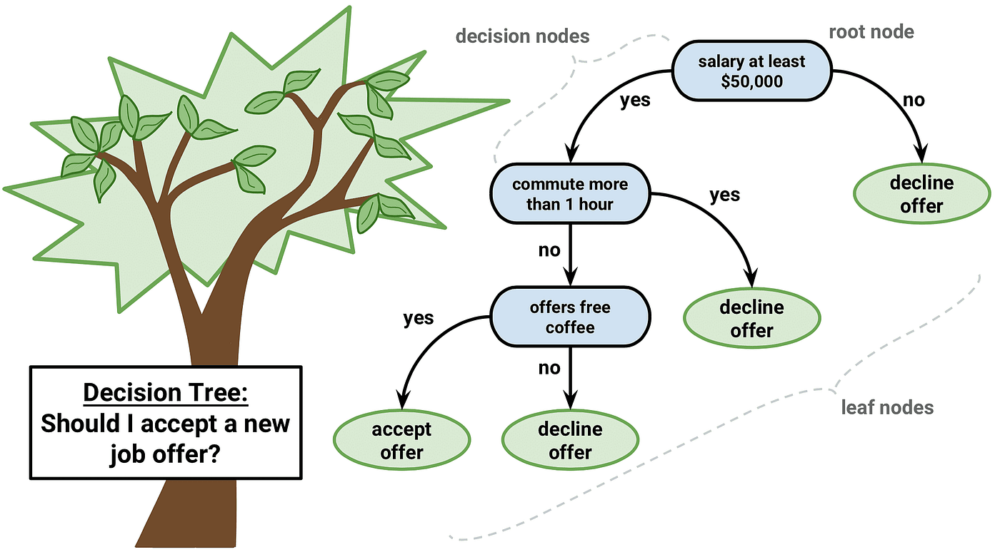
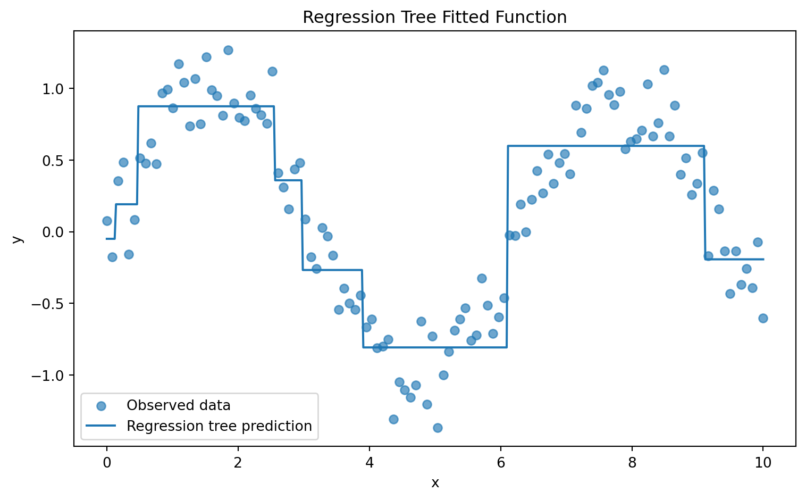
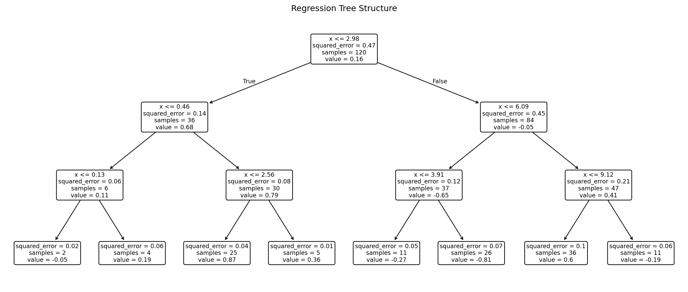
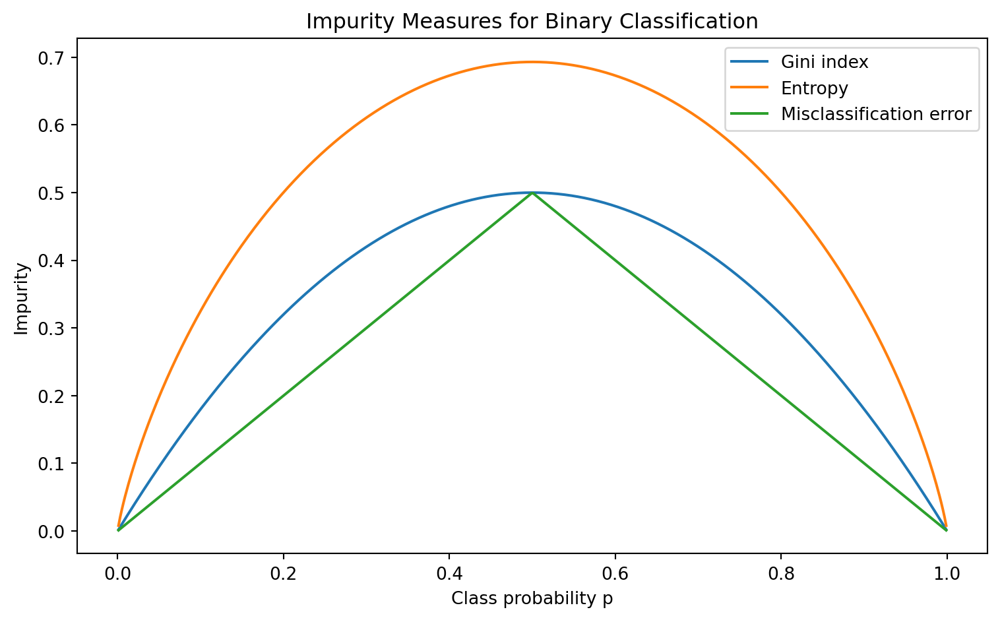
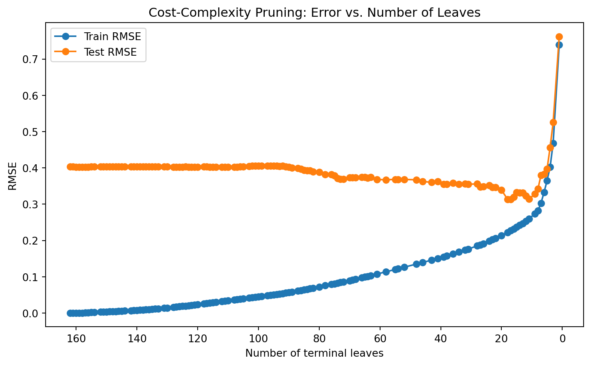
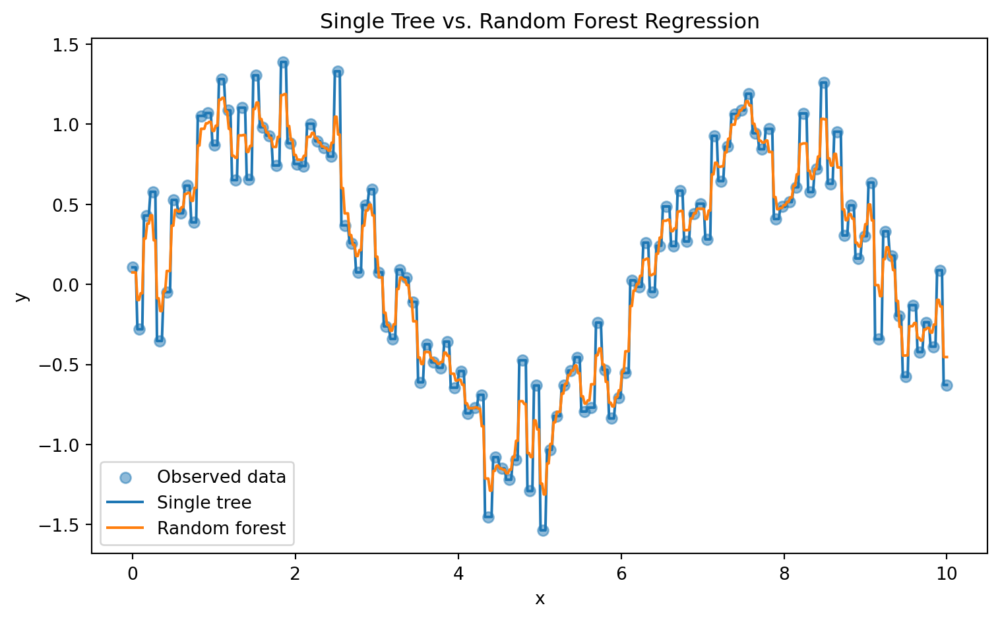
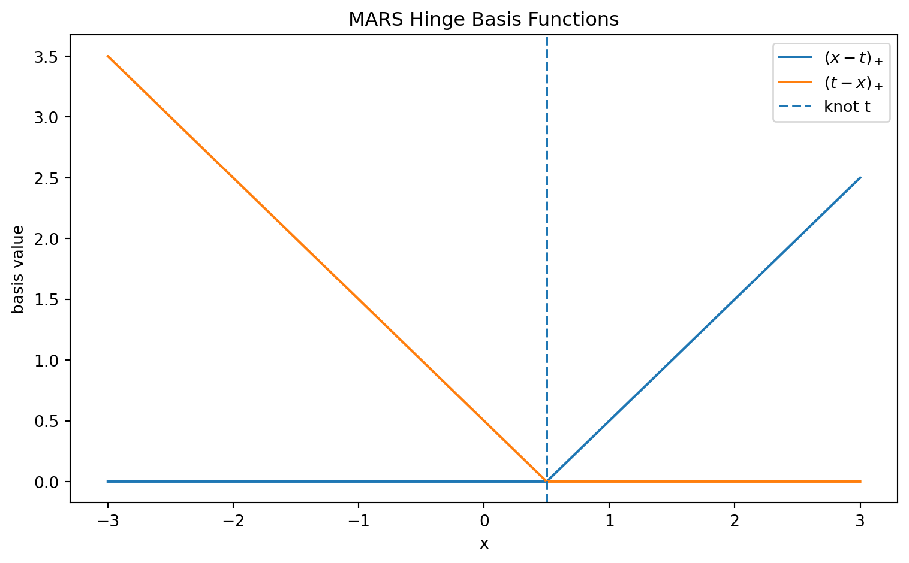
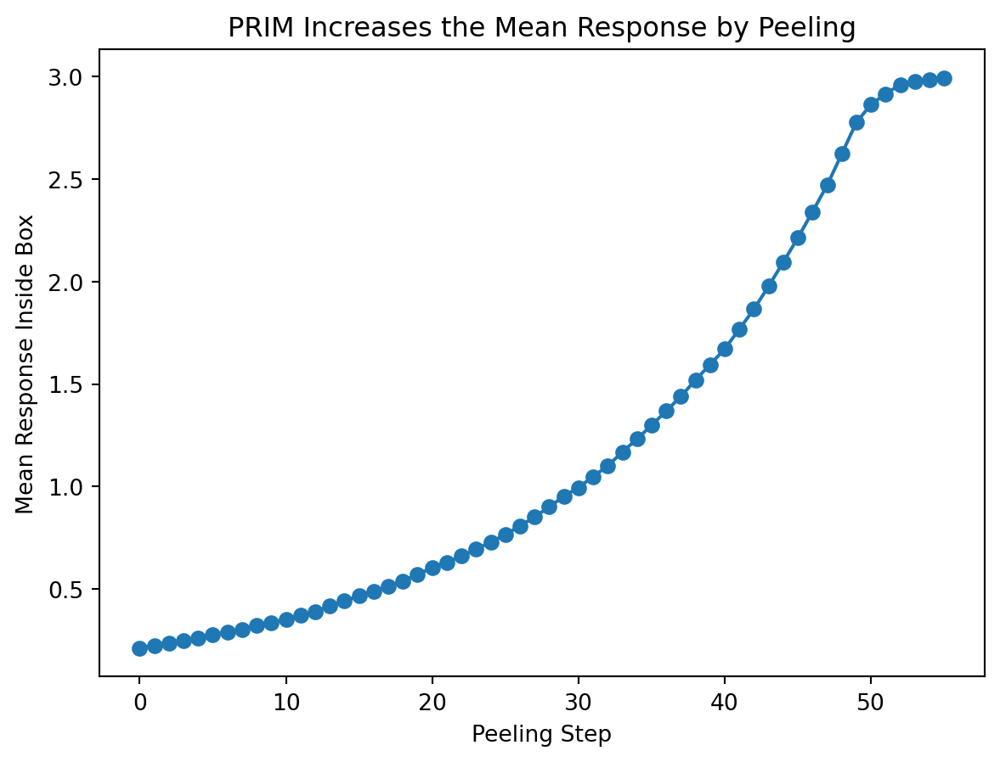
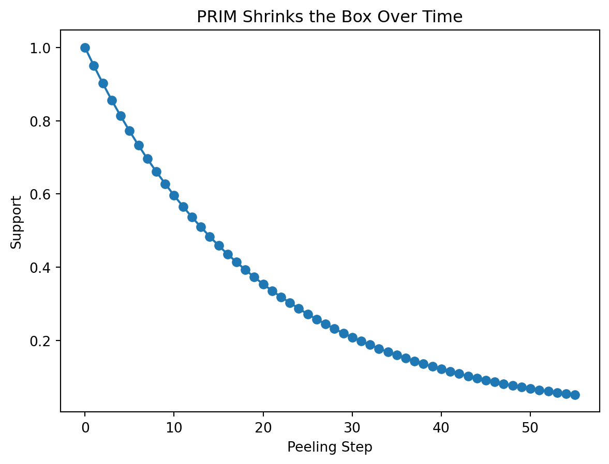

The previous chapter introduced regression as a supervised learning framework for estimating a continuous function \[
f:\mathcal X \to \mathbb R.
\] In that setting, the model usually assumes that the response changes smoothly with the input variables. A linear regression model, for example, assumes that each predictor contributes additively and proportionally to the target, unless the analyst manually adds nonlinear features or interaction terms.
Tree-based models take a different view.
Instead of assuming a global equation, a tree-based model divides the feature space into a collection of simpler regions and makes a prediction within each region. The model then asks: “How can input space be split into subpopulations whose outcomes are more homogeneous?”
This makes tree-based models especially useful when the relationship between predictors and target variables is nonlinear, discontinuous, interaction-heavy, or difficult to express through a simple parametric equation.
A decision tree can be understood as a recursive partitioning model. Starting from the full dataset, the algorithm repeatedly chooses a feature and a threshold, splits the data into two child nodes, and continues until a stopping rule is reached. The result is a rooted tree:
internal nodes contain decision rules,
branches represent outcomes of those rules,
terminal nodes, or leaves, contain predictions.
The classical framework for this approach is Classification and Regression Trees, commonly called CART, introduced by Breiman, Friedman, Olshen, and Stone in 19841. CART formalized tree learning for both regression and classification through recursive binary splitting and cost-complexity pruning.

decision-tree.png
1. Formal Setup
Let the training data be \[
\mathcal D_n=\{(x_i, y_i)\}_{i=1}^n
\] where \[
x_i = (x_{i1}, x_{i2}, \dots, x_{ip}) \in \mathbb R^p
\] is a vector of \(p\) predictors, and \(y_i\) is the response. For regression, \(y_i\in \mathbb R\). For classification, \(y_i \in \{1, 2, \dots, K\}\).
A tree model partitions the feature space \(\mathcal X\in \mathbb R^p\) into \(M\) disjoint regions: \[
R_1, R_2, \dots, R_m
\] such that \[
R_m\cap R_\ell = \varnothing \quad \text{ for } m\neq \ell
\] and \[
\bigcup_{m=1}^M R_m = \mathcal X
\] Each region corresponds to one terminal node of the tree. The prediction is constant within each terminal region.
For regression, the tree takes the form \[
\hat f(x) = \sum_{m=1}^M c_m \times \mathbf I\{x\in R_m\}
\] where \(\mathbf I\{x\in R_m\}\) is an indicator function: \[
\mathbf I(x\in R_m) = \begin{cases}
1, & x\in R_m\\
0, &x\not \in R_m
\end{cases}
\] For classification, the tree estimates class probabilities inside each region: \[
\hat p_{mk}=\frac{1}{N}\sum_{x_i\in R_m} \mathbf I\{y_i=k\}
\] where \(N_m\) is the number of training observations in region \(R_m\). The predicted class is usually \[
\hat k(x) = \arg \max_k \hat p_{mk}
\] ## 2. Regression Trees
NoteDefinition: Regression Tree
A regression tree is a piecewise-constant function\[
\hat f(x) = \sum_{m=1}^M c_m \times \mathbf I\{x\in R_m\}
\]where the input space is partitioned into disjoint regions \(R_1, \dots, R_M\), and each region is assigned a constant prediction \(c_m\).
The model is nonparametric in the sense that it does not assume a fixed global equation such as \(y = \beta_0 + \beta_1 x_1 + \dots + \beta_p x_p +\epsilon\). Instead, it learns the partition structure from data.
2.1. Optimal Leaf Prediction for Squared Error
For a fixed partition \(R_1, \dots, R_M\), the regression tree chooses constants \(c_1, \dots, , c_M\) to minimizes the sum of square errors: \[
SSE = \sum_{i=1}^n \left(y_i-\hat f(x_i)\right)^2
\] Then the objective becomes: \[
SSE = \sum_{m=1}^{M} \sum_{x_i\in R_m}(y_i-c_m)^2
\]
TipTheorem: Optimal Constant in a Regression Tree Leaf
For a fixed terminal region \(R_m\), the value of \(c_m\) that minimizes \[
\sum_{x_i\in R_m} (y_i-c_m)^2
\] is the sample mean of the response values in that region: \[
\hat c_m = \frac{1}{N_m}\sum_{x_i\in R_m} y_i
\]
NoteProof
For a fixed region \(R_m\), define \[
J(c_m) = \sum_{x_i\in R_m} (y_i-c_m)^2.
\] Differentiate with respect to \(c_m\): \[
\frac{dJ}{dc_m} = \sum_{x_i\in R_m} 2(y_i-c_m)(-1)=-2\sum_{x_i\in R_m}(y_i-c_m).
\] Set equal to zero: \[
-2\sum_{x_i\in R_m}(y_i-c_m)=0 \implies \sum_{x_i\in R_m} y_i - \sum_{x_i\in R_m} c_m = 0
\] Since \(c_m\) is constant within the region, \(\sum_{x_i\in R_m} c_m = N_mc_m\), thus, \[
\sum_{x_i\in R_m} y_ i = N_m c_m \implies \hat c_m = \frac{1}{N_m}\sum_{x_i\in R_m} y_i.
\]
2.2. Recursive Binary Splitting
The idea tree would search over all possible partitions of \(\mathcal X\). However, the number of possible partitions is enormous, and finding the globally optimal tree is computationally infeasible in general. CART therefore uses a greedy recursive splitting algorithm.
At a given node containing data \(R\), the algorithm considers splits of the form \[
R_1 (j,s) = \{x\in R: x_j \leq s\},\, R_2(j,s)=\{x\in R:x_j > s\}
\] where \(j\in \{1, \dots, p\}\) is the splitting variable and \(s\) is the split threshold.
For regression, the best split solves \[
(j^*, s^*) = \arg \min_{j,s} \left[\sum_{x_i\in R_1(j,s)}(y_i-\overline y_{R_1})^2 + \sum_{x_i\in R_2(j,s)}(y_i-\overline y_{R_2})^2\right]
\] where \[
\overline y_{R_k}=\frac{1}{N_{R_k}}\sum_{x_i\in R_k(j,s)}y_i.
\] The split is chosen because is maximally reduces within-node variance.
Equivalently, define the impurity of a regression node \(R\) as \[
Q(R) = \frac{1}{N_R}\sum_{x_i\in R} (y_i-\overline y_R)^2
\] The total weighted impurity after a split is \[
Q_{\text{split}}(j,s)=\frac{N_{R_1}}{N_R}Q(R_1)+\frac{N_{R_2}}{N_R}Q(R_2)
\] The best split minimizes \(Q_\text{split}(j,s)\).
Show code
import numpy as npimport matplotlib.pyplot as pltfrom sklearn.tree import DecisionTreeRegressor, plot_treerng = np.random.default_rng(42)# Simulated nonlinear dataX = np.linspace(0, 10, 120).reshape(-1, 1)y = np.sin(X).ravel() +0.25* rng.normal(size=X.shape[0])# Fit regression treetree = DecisionTreeRegressor(max_depth=3, random_state=42)tree.fit(X, y)# Prediction gridX_grid = np.linspace(0, 10, 500).reshape(-1, 1)y_pred = tree.predict(X_grid)# Plot fitted functionplt.figure(figsize=(8, 5))plt.scatter(X, y, alpha=0.65, label="Observed data")plt.plot(X_grid, y_pred, label="Regression tree prediction")plt.title("Regression Tree Fitted Function")plt.xlabel("x")plt.ylabel("y")plt.legend()plt.tight_layout()plt.show()

Figure 1: Regression tree fitted function
Show code
# Plot tree structureplt.figure(figsize=(14, 6))plot_tree( tree, feature_names=["x"], filled=False, rounded=True, precision=2)plt.title("Regression Tree Structure")plt.tight_layout()plt.show()

Figure 2: Regression tree structure
3. Classification Trees
NoteDefinition: Classification Tree
A classification tree is a recursive partitioning model for categorical responses \(Y\in \{1,\dots, K\}\). Each terminal region \(R_m\) estimates class probabilities\[
\hat p_mk = \frac{1}{N_m}\sum_{x_i\in R_m} \mathbf I\{y_i=k\}
\]
and predicts the majority class\[
\hat k(x) = \arg \max_k \hat p_mk \quad \text{ for } x\in R_m
\]
The goal of splitting is to produce child nodes that are more homogeneous than their parent node.
3.1. Node Impurity Measures
Unlike regression trees, classification trees do not minimize squared residuals. They minimize impurity. A pure node contains observations from only one class. An impure node contains a mixture of classes.
Let \(\hat p_{mk}\) be the proportion of class \(k\) observations in node \(m\).
Three common impurity measures are:
Misclassification error,
Gini index,
Cross-entropy, also called deviance.
3.1.1. Misclassification Error
The misclassification error at node \(m\) is \[
Q_m^{ME} = 1 - \max_k\hat p_{mk}
\] This measures the error rate if every observation in the node is assigned to the majority class.
For example, if a node has class proportions \((\hat p_{m1}, \hat p_{m2})= (0.8,0.2)\), then \[
Q_{m}^{ME} = 1-0.8=0.2.
\]
Misclassification error is simple and interpretable, but it is less sensitive to changes in node purity than Gini or entropy. For this reason, CART often uses Gini for classification splitting and uses misclassification error more naturally for evaluating final tree performance.
3.1.2. Gini Index
The Gini index is \[
Q_{m}^{\text{Gini}} = \sum_{k=1}^K\hat p_{mk}(1-\hat p_{mk})
\]
This can also be written as \[
Q_m^{\text{Gini}} = 1-\sum_{k=1}^K \hat p_{mk}^2
\]
If one randomly labels an observation according to the class distribution in the node, the Gini index is the expected probability of incorrect classification. A pure node has one class probability equal to 1 and all others equal to 0, so \(Q_m^\text{Gini}=0\). A maximal mixed binary node with \(\hat p_{m1} = \hat p_{m2}=0.5\) has \(Q_m^\text{Gini}=1-(0.5^2+0.5^2)=0.5\).
3.1.3. Cross-Entropy / Deviance
The cross-entropy impurity is \[
Q_m^\text{Entropy} = -\sum_{k=1}^K \hat p_{mk}\log (\hat p_{mk})
\]
By convention, \(0\log0 = 0\).
Entropy measures uncertainty in the class distribution. A pure node has entropy 0. A uniformly mixed node has high entropy.
For binary classification, if \(p=\hat p_{m1}\), then: \[
Q_m^\text{Entropy}(p) = -p\log p - (1-p)\log (1-p)
\]
Entropy is connected to information theory and likelihood-based classification. It penalizes uncertain class distribution strongly.
Show code
import numpy as npimport matplotlib.pyplot as pltp = np.linspace(0.001, 0.999, 500)gini =2* p * (1- p)entropy =-(p * np.log(p) + (1- p) * np.log(1- p))misclassification =1- np.maximum(p, 1- p)plt.figure(figsize=(8, 5))plt.plot(p, gini, label="Gini index")plt.plot(p, entropy, label="Entropy")plt.plot(p, misclassification, label="Misclassification error")plt.title("Impurity Measures for Binary Classification")plt.xlabel("Class probability p")plt.ylabel("Impurity")plt.legend()plt.tight_layout()plt.show()

Figure 3: Impurity measures for binary classification
3.2. Example: Heart Disease Rule Tree
Suppose a simplified health dataset contains the following predictors: \[
X_1 = \text{Exercise}, X_2=\text{Smoking}, X_3 =\text{Age}, X_4=\text{Blood Pressure}
\] The response is \[
Y\in \{\text{Healthy, At Risk}\}
\]
Figure 4: Classification tree for simplified health risk
4. Pruning and Model Complexity
4.1. Why Trees Overfit
A fully grown decision tree can often fit the training data extremely well. If allowed to keep splitting until every terminal node contains only one or a few observations, the tree can memorize noise.
In regression, this means the training SSE may become very small. In classification, the training error may approach zero. But a tree with very low training error may generalize poorly.
This is the same generalization problem discussed in the previous chapter, but the mechanism is different. For regression, overfitting may appear as an overly complex polynomial curve. For trees, overfitting appears as an overly fragmented partition of the feature space.
4.2. Cost-Complexity Pruning
CART addresses overfitting using cost-complexity pruning. The idea is to first grow a large tree \(T_0\), then prune it back to smaller subtrees.
Let \(T\) be a subtree of \(T_0\), and let \(|T|\) denote the number of terminal nodes in \(T\). Define \[
R(T) = \sum_{m=1}^{|T|} N_mQ_m(T),
\] where \(Q_m(T)\) is the impurity or loss in terminal node \(m\).
The cost-complexity criterion is \[
C_\alpha(T) = R(T) + \alpha |T|,
\] where \(a\geq 0\) is a tuning parameter.
If \(\alpha = 0\), the criterion favors the largest tree with lowest training error.
If \(\alpha\) is large, the criterion penalizes complexity more heavily and favors a smaller tree.
NoteCost-Complexity Pruning
Cost-complexity pruning selects a subtree\[
T_\alpha = \arg\min_{T\subseteq T_0}[R(T)+\alpha|T|].
\]The parameter \(\alpha\) controls the tradeoff between empirical fit and tree size.
Show code
import numpy as npimport matplotlib.pyplot as pltfrom sklearn.tree import DecisionTreeRegressorfrom sklearn.model_selection import train_test_splitfrom sklearn.metrics import mean_squared_errorrng = np.random.default_rng(42)X = np.linspace(0, 10, 250).reshape(-1, 1)y = np.sin(X).ravel() +0.3* rng.normal(size=X.shape[0])X_train, X_test, y_train, y_test = train_test_split( X, y, test_size=0.35, random_state=42)base_tree = DecisionTreeRegressor(random_state=42)path = base_tree.cost_complexity_pruning_path(X_train, y_train)ccp_alphas = path.ccp_alphastrain_rmse = []test_rmse = []leaf_counts = []for alpha in ccp_alphas: tree = DecisionTreeRegressor(random_state=42, ccp_alpha=alpha) tree.fit(X_train, y_train) train_pred = tree.predict(X_train) test_pred = tree.predict(X_test) train_rmse.append(mean_squared_error(y_train, train_pred) **0.5) test_rmse.append(mean_squared_error(y_test, test_pred) **0.5) leaf_counts.append(tree.get_n_leaves())plt.figure(figsize=(8, 5))plt.plot(leaf_counts, train_rmse, marker="o", label="Train RMSE")plt.plot(leaf_counts, test_rmse, marker="o", label="Test RMSE")plt.gca().invert_xaxis()plt.title("Cost-Complexity Pruning: Error vs. Number of Leaves")plt.xlabel("Number of terminal leaves")plt.ylabel("RMSE")plt.legend()plt.tight_layout()plt.show()

Figure 5: Cost-complexity pruning performance versus number of leaves
5. Strengths and Limitations of Single Trees
5.1. Interpretability
A single decision tree is interpretable because it represents predictions as a sequence of logical rules. Each root-to-leaf path can be written as a conjunction of conditions: \[
x_3\leq 40 \quad \wedge\quad x_1> 2.5\quad \wedge \quad x_5 = \text{Yes}
\] This rule-based structure is useful in domains where decisions must be communicated to nontechnical stakeholders.
However, interpretability declines as the tree becomes large. A tree with hundreds of leaves may be no easier to interpret than a black-box model.
5.2. Invariance to Monotone Transformations
Decision trees are invariant to strictly monotone transformations of individuals predictors.
TipTheorem: Monotone Transformation Invariance
Let \(g:\mathbb R \to \mathbb R\) be a strictly increasing function. A split of the form \[
x_j \leq s
\] is equivalent to \[
g(x_j) \leq g(s).
\] Therefore, applying a strictly increasing transformation to \(x_j\) does not change the ordering of observations along that feature and does not change the set of possible binary partitions induced by threshold splits.
NoteProof
Because \(g\) is strictly increasing, \[
x_j \leq s \Longleftrightarrow g(x_j)\leq g(s).
\] Thus, the observations sent to the left child and right child are unchanged under the transformation. The possible split structure is preserved.
This is why trees do not require feature scaling in the same way that KNN, K-means, or gradient-based regression models often do. Scaling is often unnecessary for tree split rules because trees depend on order.
5.3. Limitations of Single Trees
Single trees have several weakness:
High variance. Small changes in training data can produce different tree structures.
Greedy optimization. Each split is locally optimal, not globally optimal.
Piecewise-constant predictions. Regression trees may poorly approximate smooth functions.
Axis-aligned boundaries. Splits are usually of the form \(x_j\leq s\), which can be inefficient for diagonal or curved boundaries.
Bias toward variables with many split points. Some tree algorithms can favor predictors with many possible thresholds.
Weak predictive power alone. A shallow tree may be interpretable but inaccurate; a deep tree may be accurate on training data but unstable.
These limitations motivate ensemble methods.
6. Bagging and Random Forests
An ensemble combines multiple models to produce a stronger predictor. For trees, ensemble learning is especially effective since we already know that individuals trees have high variance. Averaging many high-variance but low-bias models can reduce variance substantially.
This is the foundation of bagging and random forests.
6.1. Bagging: Bootstrap Aggregation
Bagging, short for bootstrap aggregation, trains many trees on bootstrap samples of the training data. A bootstrap sample is formed by sampling \(n\) observations with replacement from the original training set.
Let \(\mathcal D^{*(b)}\) be the \(b\)-th bootstrap sample, and let \(\hat f^{*(b)}(x)\) be the tree trained on that sample.
Suppose each tree prediction has variance \(\sigma^2\), and suppose the pairwise correlation between tree predictions is \(\rho\). Let the ensemble average be
As \(B\to \infty\), the second term vanishes: \(\frac{1-\rho}{B}\sigma^2\to 0\). But the first term remains \(\rho \sigma^2\). Therefore, adding more tree reduces variance caused by finite averaging, but if the trees are highly correlated, the ensemble still has a nonzero correlation-driven variance component. This motivates random forests, which try to reduce \(\rho\).
6.3. Random Forests
A random forest modifies bagging by adding random feature selection.
At each split in each tree:
Select a random subset of features \[\mathcal M \subseteq \{1,\dots, p\}, \qquad |\mathcal M|=m. \]
Search for the best split only among features in \(\mathcal M\).
Grow each tree deeply, often without pruning.
The final prediction is an average for regression or a majority vote for classification.
NoteDefinition: Random Forest Regression Predictor
Random forests are strong default models for many tabular datasets because they capture nonlinearities and interactions, reduce variance, and require relatively little feature scaling.
Show code
import numpy as npimport matplotlib.pyplot as pltfrom sklearn.tree import DecisionTreeRegressorfrom sklearn.ensemble import RandomForestRegressorrng = np.random.default_rng(42)X = np.linspace(0, 10, 120).reshape(-1, 1)y = np.sin(X).ravel() +0.35* rng.normal(size=X.shape[0])single_tree = DecisionTreeRegressor(max_depth=None, random_state=42)forest = RandomForestRegressor( n_estimators=200, max_features=1.0, random_state=42)single_tree.fit(X, y)forest.fit(X, y)X_grid = np.linspace(0, 10, 500).reshape(-1, 1)plt.figure(figsize=(8, 5))plt.scatter(X, y, alpha=0.5, label="Observed data")plt.plot(X_grid, single_tree.predict(X_grid), label="Single tree")plt.plot(X_grid, forest.predict(X_grid), label="Random forest")plt.title("Single Tree vs. Random Forest Regression")plt.xlabel("x")plt.ylabel("y")plt.legend()plt.tight_layout()plt.show()

Figure 6: Single Tree vs. Random Forest Regression
6.4. Feature Importance in Random Forests
Random forests can produce feature importance scores. A common measure is mean decrease in impurity:
\[
FI_j = \sum_{\text{splits on } j} \Delta Q_\text{split}
\]
where \(\Delta Q_\text{split}\) is the impurity reduction caused by splits using feature \(j\), averaged over all trees.
However, impurity-based feature importance can be biased toward variables with many possible split points. Permutation importance is often more reliable:
where \(\mathcal D_{\pi(j)}\) is the dataset after randomly permuting feature \(j\). If shuffling \(j\) greatly worsens performance, then feature \(j\) is importance.
7. Boosting
Bagging and random forests train trees independently and combine them by averaging or voting. Boosting trains models sequentially, where each new model attempts to correct the errors of the current ensemble.
\(h_b(x)\) is the \(b\)-th weak learner, often a shallow tree,
\(\gamma_b\) is its weight,
\(\nu \in (0,1]\) is the learning rate or shrinkage parameter.
Boosting can produce highly accurate models because it converts many weak learners into a strong learner. AdaBoost formalized one influential version of this idea, and gradient boosting generalized boosting as function gradient descent in function space.
7.1. AdaBoost
For binary classification, let
\[
y_i\in \{-1, +1\},
\]
AdaBoost fits an additive model
\[
F_B(x) = \sum_{b=1}^B \alpha_b h_b(x),
\]
where
\[
h_b(x) \in \{-1, +1\}.
\]
The final prediction is
\[
\hat y(x) = \text{Sign}(F_B(x))
\]
AdaBoost can be interpreted as minimizing the exponential loss
\[
L(y, F(x)) = \exp(-yF(x)).
\]
At iteration \(b\), observations misclassified by the previous weak learner receive more weight, so the next weak learner focuses more heavily on difficult cases.
7.2. Gradient Boosting
Gradient boosting generalizes boosting to arbitrary differentiable loss functions. The model is built additively:
Random forests and gradient boosting are both tree ensembles, but they behave differently.
Property
Random Forest
Gradient Boosting
Training structure
Parallel / independent trees
Sequential trees
Main purpose
Reduce variance
Reduce bias and improve fit
Tree depth
Often deep trees
Often shallow trees
Combination
Average or vote
Additive correction
Tuning sensitive
Moderate
Higher
Overfitting risk
Lower with many trees
Can overfit if too many stages or high learning rate
Interpretability
Moderate
Lower for large ensembles
Strong use case
Robust general tabular baseline
High-performance structured prediction
8. Advanced Tree-Based Extensions
8.1. Multivariate Adaptive Regression Splines
Multivariate Adaptive Regression Splines, or MARS, can be understood as a smooth extension of tree logic. Instead of partitioning the space into constant regions, MARS uses piecewise linear basis functions.
MARS automatically selects knots \(t\), variables \(j\), and interactions. It is more flexible than linear regression but smoother than a step-function regression tree2.
Show code
import numpy as npimport matplotlib.pyplot as pltx = np.linspace(-3, 3, 400)t =0.5basis_right = np.maximum(0, x - t)basis_left = np.maximum(0, t - x)plt.figure(figsize=(8, 5))plt.plot(x, basis_right, label=r"$(x-t)_+$")plt.plot(x, basis_left, label=r"$(t-x)_+$")plt.axvline(t, linestyle="--", label="knot t")plt.title("MARS Hinge Basis Functions")plt.xlabel("x")plt.ylabel("basis value")plt.legend()plt.tight_layout()plt.show()

Figure 8: Hinge Basis Functions
8.2. Patient Rule Induction Method
The Patient Rule Induction Method, or PRIM, is designed for bump hunting: finding regions in the feature space where the response is unusually high or low.
Instead of greedily splitting the space into a full tree, PRIM searches for boxes
PRIM works by “peeling” away small portions of the data to increase the response average inside the remaining box. PRIM differs from CART because its primary goal is not to partition the entire feature space. Its goal is to find an especially interesting region.
Let create synthetic data with one hidden high-response bump
Now let make a simple version of PRIM. It starts with the full data box, then repeatedly removes small slices from the edges if doing so increases the average response inside the box.
PRIM box:
{'X1': (np.float64(0.33259889876415977), np.float64(0.5395157950260531)), 'X2': (np.float64(0.5997433374726472), np.float64(0.8235750481290036)), 'mean_response_inside_box': np.float64(2.9932485876633734), 'support': np.float64(0.052)}
Mean Y inside PRIM box: 2.9932485876633734
Mean Y outside PRIM box: 0.058258882743774075
Support: 0.052
history = pd.DataFrame({"step": range(len(prim.history_)),"mean_response": [h["mean"] for h in prim.history_],"support": [h["support"] for h in prim.history_]})plt.figure(figsize=(7, 5))plt.plot(history["step"], history["mean_response"], marker="o")plt.xlabel("Peeling Step")plt.ylabel("Mean Response Inside Box")plt.title("PRIM Increases the Mean Response by Peeling")plt.show()plt.figure(figsize=(7, 5))plt.plot(history["step"], history["support"], marker="o")plt.xlabel("Peeling Step")plt.ylabel("Support")plt.title("PRIM Shrinks the Box Over Time")plt.show()


8.3. Hierarchical Mixtures of Experts
Hierarchical Mixtures of Experts, or HME, replace hard tree splits with soft probabilistic gates3.
In a standard tree, an observation goes left or right:
\[
x_j \leq s \quad \text{or} \quad x_j > s
\]
In HME, a gating function assigns probabilities to different experts:
\[
\pi_m(x) = P(\text{expert }m \,|\, x)
\]
The final prediction is a weighted mixture:
\[
\hat f(x) = \sum_{m=1}^M \pi_m(x) f_m(x),
\]
where each \(f_m(x)\) may be a linear or logistic regression model.
HME can be interpreted as a soft decision tree: instead of assigning an input to a single leaf, it blends expert predictions.
Again, we create synthetic data. Here, the true response follows different linear patterns in different regions of \(x\).
Tree-based models provide a fundamentally different approach to supervised learning than the regression methods. Regression models often begin with a functional equation. Tree-based models begin with a partition of the feature space.
A regression tree approximates an unknown function by dividing the input space into disjoint regions and assigning each region a constant prediction. A classification tree uses the same recursive partitioning logic but chooses splits that reduce class impurity. CART formalizes this process through binary recursive splitting and cost-complexity pruning.
Single trees are interpretable but unstable. They can represent nonlinear interactions and rule-like structures, but they often have high variance and may struggle with smooth additive functions. Ensemble methods solve many of these weaknesses. Bagging reduces variance by averaging trees trained on bootstrap samples. Random forests improve bagging by decorrelating trees through random forest feature selection. Boosting builds an additive model sequentially, fitting each new tree to the errors or gradient of the current model.
Breiman, Leo, Jerome H. Friedman, Richard A. Olshen, and Charles J. Stone. Classification and Regression Trees. Chapman & Hall/CRC, 1984. https://doi.org/10.1201/9781315139470.↩︎
“Proceedings Of 1993 International Joint Conference On Neural Networks.” Proceedings of 1993 International Conference on Neural Networks (IJCNN-93-Nagoya, Japan), 1993, i–xxxxiii. https://doi.org/10.1109/IJCNN.1993.714125.↩︎